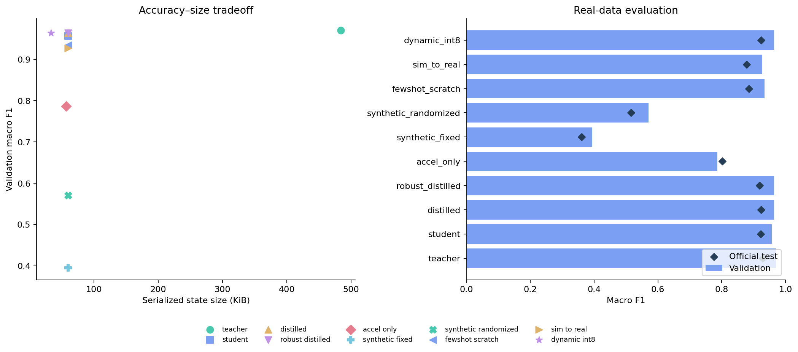
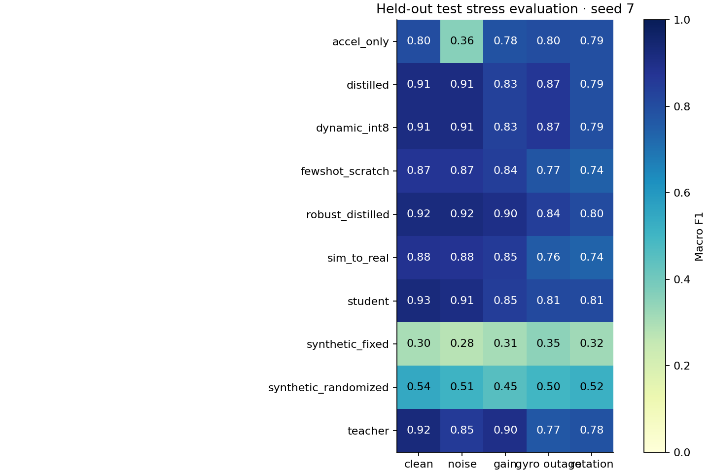
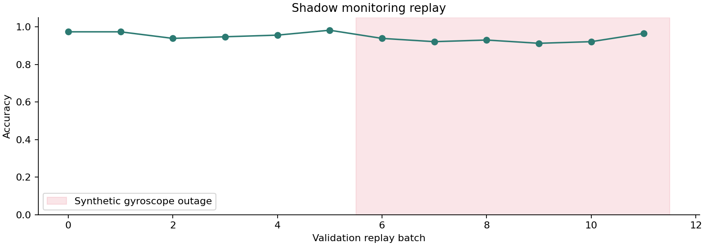

RESEARCH / SYSTEMS / MEASUREMENTS
Edge Agent Lab
From measured motion to constrained deployment. Three projects connect sensor fusion, evidence-based data stewardship, and adaptive experiment selection.
Offline report · no API keys · actual experiment artifacts
Efficient multimodal activity recognition
Train-only normalization, subject-disjoint validation, distillation, partial INT8, and simulation-to-real transfer. Select a metric to sort the measured candidate table.
| Candidate | Seeds | Val F1 | Test F1 | p95 ms | KiB | Outage F1 |
|---|


Development timing can be affected by concurrent training. Test metrics are reporting only. Simulation is an approximate prior; synthetic corruption is not a new measured dataset.
Evidence-based data engineering
A bounded planner calls typed catalog, retrieval, audit, and sensor simulation tools. Every action and observation is durably logged in SQLite. Policy and optional local LLM results are reported separately.
Measured constraint-aware selection
Planner → runner → critic. Hard gates cover validation F1, latency, size, and missing-sensor robustness. The controller can decline to select a model.

Core ML export and runtime parity
Export includes normalization. Float and weight-compressed artifacts are benchmarked on the explicitly named local backend. Export alone does not establish Neural Engine placement.